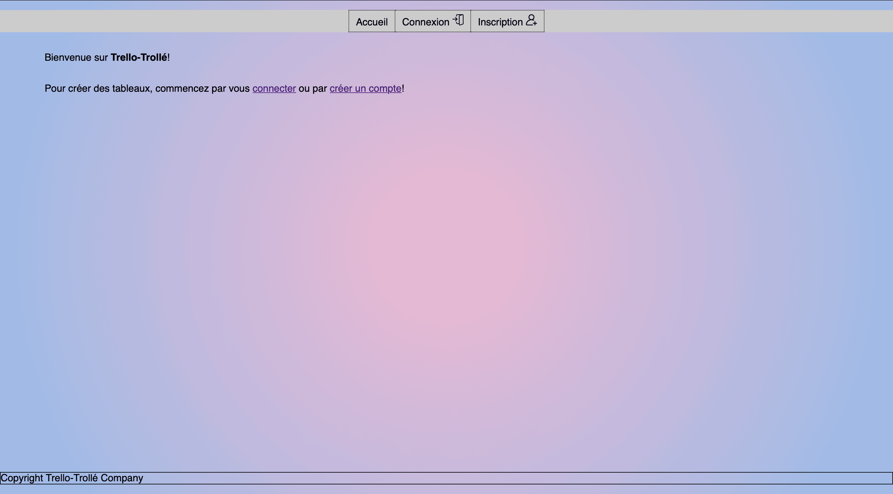

Ce projet, réalisé en deuxième année de BUT informatique, consistait à reprendre le code en php d'un autre développeur qui à recoder le site Trello pour régler les failles de sécurité et l'optimiser avec le moteur de template twig.
Ce projet a été conçu pour être réalisé en 3 phases :
Phase 1 : Analyse et audit de l'application existante (sans toucher au code)
Phase 2 : Conception, régler les problèmes ainsi que les failles de sécurités
Phase 3 : Améliorer l'utilisation et le visuel du site web (JavaScript)
Attente : amélioration du site web existant pour qu'il n'y ai plus de failles de sécurité

Voici la page d'accueil du site web lorsqu'on n'est pas connecté. Le site est fonctionnel voici les fonctionnalitées déjà présentes : s'inscrire, se connecter, gérer son compte (mise à jour, suppression...) mais aussi, gérer des tableaux, gérer des colonnes dans des tableaux, gérer des cartes dans des colonnes, ajouter des membres sur ses tableaux, affecter des membres du tableau à certaines cartes, et quitter les tableaux où il est simplement membre.
Relations entre les réalisations personnelles et le programme de BUT Informatique
CE 4.05 - Gérer : assurer la cohérence et la qualité.
Ex : Normalisation de la base de données.
CE 6.04 - Collaborer: développer une communication efficace et collaborative.
Ex : Mise en place d'un Discord et de réunions quotidiennes.
AC 21.03 - Réaliser: adopter de bonnes pratiques de conception et de pragrammation.
Acquis
Ex : Intégrer des princides de qualité de code comme SOLID, DRY, CRUD ...
AC 22.03 - Optimiser: comprendre les enjeux et moyens de sécurisation des données et du code
Acquis
Ex : Détecter les failles de sécurité ainsi que les problèmes d'utilisation.
AC 24.03 - Gérer: organiser la restitution de données à travers la programmation et la visualisation.
Acquis
Ex : Création de diagramme de cas d'utilisation et de trigger.